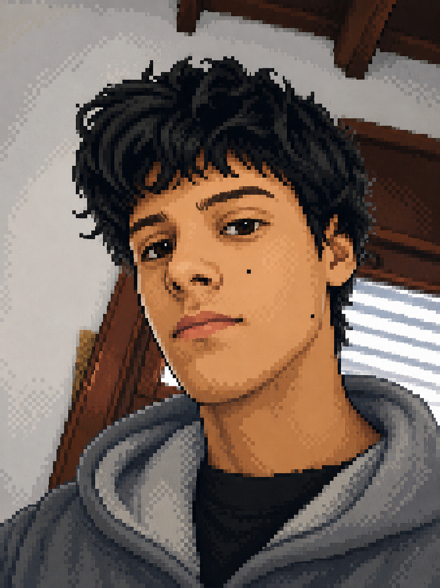
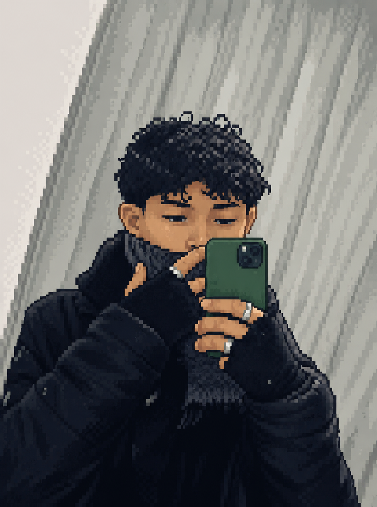

German Franco Lantaño Barrueta
Arquitectura JS & Consumo de API
Encargado de la modularización en JavaScript, modelado de datos con clases, peticiones con Fetch API y manejo de estados.
Conocé al equipo detrás del desarrollo y las decisiones técnicas que dieron forma a este sitio.

Arquitectura JS & Consumo de API
Encargado de la modularización en JavaScript, modelado de datos con clases, peticiones con Fetch API y manejo de estados.

Maquetación HTML5 & Diseño Responsive
Encargado de la estructura semántica de las tres páginas, implementación Mobile First y sistema de grillas.
Retomamos la identidad de nuestro grupo de desarrollo de videojuegos HappyKid. La interfaz utiliza un fondo oscuro profundo combinado con acentos cian y magenta neón para reflejar la estética arcade y gamer moderna.
Consumimos FreeToGame API (https://www.freetogame.com/api/games), una API pública sin registro que devuelve un listado de juegos gratuitos con portada, género, plataforma y descripción en una sola petición.
Desarrollado con HTML5 semántico, CSS3 bajo enfoque Mobile First con variables en :root y tres breakpoints (320px, 768px, 1024px), y JavaScript modular (ES Modules) separando datos, modelo y renderizado en el DOM.